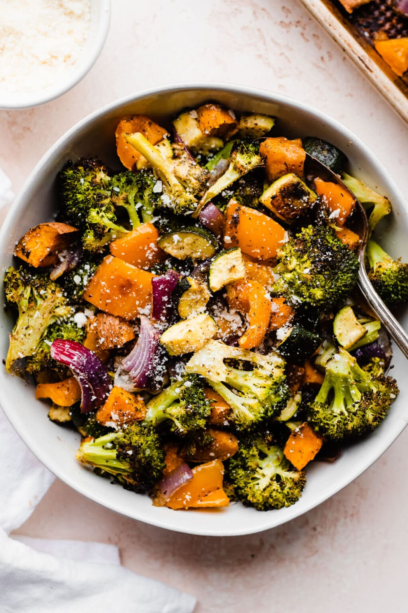

Roasted Vegetables

Adapted from Erin Clarke's "Oven Roasted Vegetables" recipe on Well Plated
Description
Simple recipe for roasted vegetables. Lightly crisp yet tender and carmaelized on the inside.
Ingredients
- 2 medium bell peppers, diced into 1-inch pieces
- 2 medium zucchini, ends trimmed and cut into 1/2-inch pieces
- 1 small sweet potato, scrubbed and cut into 3/4-inch pieces
- 1 small red onion, cut into 1-inch cubes
- 1 small head of broccoli
- 3 tbsp extra virgin olive oil
- 1 tbsp Dijon mustard
- 2 tsp Italian seasoning
- 1 tsp kosher salt
- 1/2 tsp garlic powder
- 1/2 tsp black pepper
- 3 tbsp grated Parmesan cheese
Steps
- Place racks into upper lower thirds of oven. Preheat oven to 400 degrees. Coat two large, rimmed backing sheets with non-stick spray
- Place vegetables with oil and mustard. Sprinkle with Italian seasoning, salt, garlic powder, and black pepper. Toss to coat
- Roast the vegetables at 400 degrees F for 25-35 minutes. Halfway through, toss the vegetables, rotate the pans 180 degrees, and switch the pans' positions on the upper and lower racks. The vegetables should be turning brown and crispy at their edges and tender inside. Sprinkle with Parmesan cheese. Add salt and pepper taste